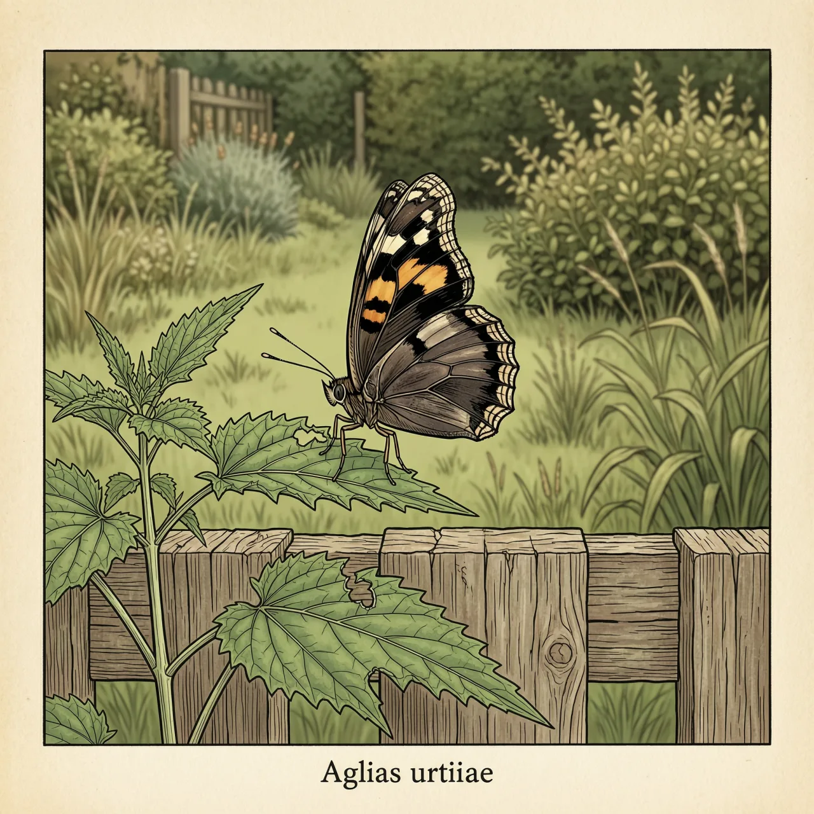
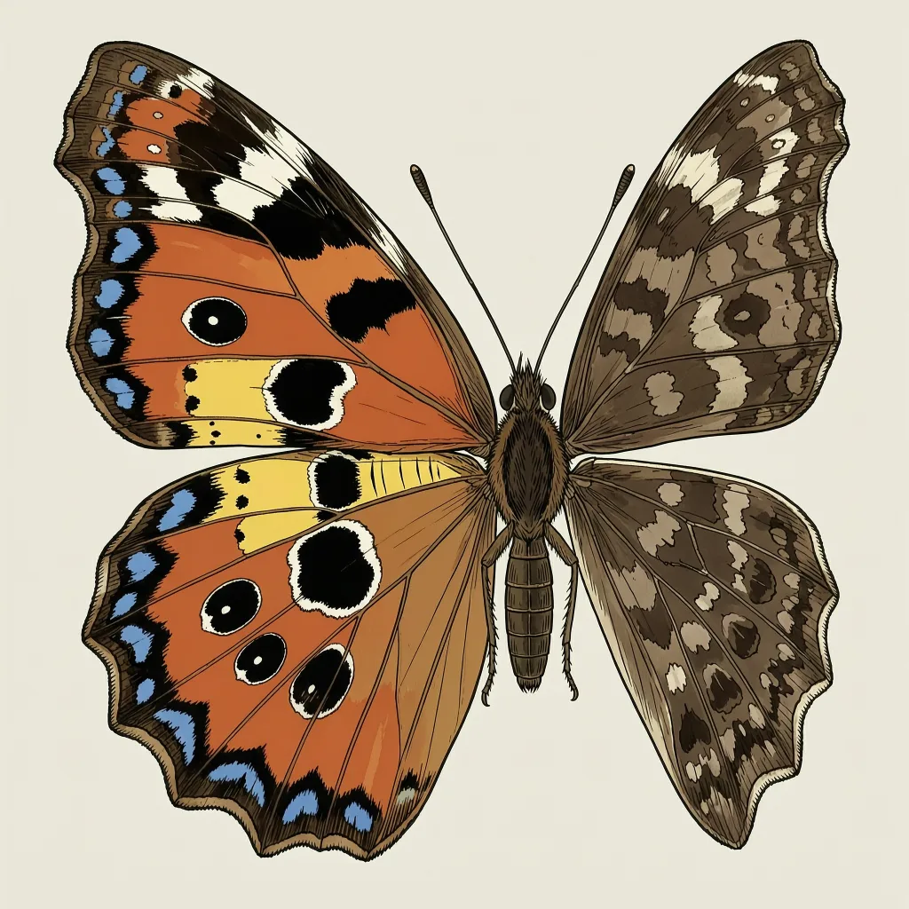

荨麻蛱蝶是欧洲温带的蝴蝶，花园里常见，幼虫主要取食荨麻。停歇时它合起翅膀，用沉色的翅底隐藏自己；被靠近就突然展开，亮出红黄翅面和后缘一列蓝点，吓退雏鸟一类掠食者。不寻常的是它以成虫形态躲过整个冬天，早春最先露面的一批其实是去年出生的个体。
荨麻蛱蝶的夏天是从一丛荨麻开始的：幼虫主要吃荨麻，成虫也爱在花园里出没，住处基本跟着荨麻和人的园地走。它是欧洲温带的蝴蝶，在英国和爱尔兰大部分地区数量很丰富，同一块地方不同年份的多寡却差得很明显。跟这种起伏有关的是普通黄胡蜂——在特定季节，胡蜂会取食荨麻蛱蝶的蛹。纽约也有它出现的记录，估计是人为带过去的，不算本地自然扩出来的分布。
荨麻蛱蝶靠同一对翅膀做两件相反的事。停在树皮、墙根或枯叶上时，它把两翅合立，露出很沉的暗色翅底，轮廓跟背景糊在一起，靠视觉找食的鸟很难认出它。真被靠近时，它立刻展开翅膀，深色的身体、红黄的翅面和后缘那一列蓝点同时亮出来；这种从暗到亮的突然变化足以吓退雏鸟一类的掠食者，让它有机会飞走。
多数蝴蝶以卵、幼虫或蛹越冬，荨麻蛱蝶却用已经长出翅膀的成虫去扛冬天，躲进暗处直到气温回升。因此早春最先在园墙和荨麻边飞起来的常常是它，而那时看到的成虫其实是去年出生的。翅上的红斑会随飞行磨损一点点褪淡，颜色最淡的那只，往往也最老。
